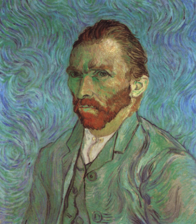
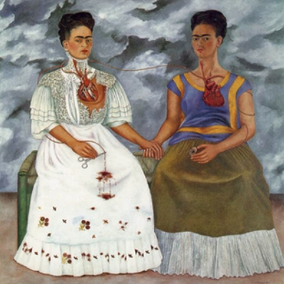

The Faceless Selfie
Contemporary art often hides what traditional portraits try to reveal.
Instead of showing a face directly, artists use symbols, absence, and ambiguity to express identity. Sometimes hiding becomes another way of revealing.
This idea inspired AIC #4: The Faceless Selfie.
We began the evening by discussing several artworks where faces were concealed or replaced. Rather than asking what the artwork meant, we asked a different question:
What remains of identity when the face disappears?


Participants then reflected on their experiences, values, memories, and aspirations. They identified symbols that felt meaningful to them and used AI to transform those symbols into self-portraits.

What surprised me most wasn't the artwork people created.
It was how differently people approached the process.
Some treated AI as a tool. Others treated it as a collaborator. A few treated it as a source of surprise.
Everyone used the same technology.
Yet nobody used it in the same way.
The way people interacted with AI seemed to mirror how they interacted with uncertainty itself. Some preferred control. Some preferred dialogue. Some embraced discovery.
The technology was the same.
The creative process was not.
Yet despite these different approaches, something unexpected happened.
Several participants independently chose the same symbol: a compass.
Their stories were different, but their symbol was the same.
That raised a question.
Why do different people sometimes arrive at the same image?
Perhaps the answer lies in the experiences they share. Many participants had moved across countries, worked in technical fields, and spent years navigating unfamiliar environments. Cognitive scientists describe this through the idea of cultural schemas: shared experiences often lead to shared metaphors.
In that sense, the compass may not have been a coincidence.
It may have already existed in our collective imagination.
This became my biggest takeaway from the evening.
We often think of AI as a tool for generating ideas. What I observed was something slightly different.
AI helped people connect memories to symbols, symbols to images, and images to stories.
And in the end, the stories mattered most.
A childhood toy. A tree. A compass. A book.
Without context, they were simply objects.
With context, they became self-portraits.
As image generation becomes easier, creativity may be shifting elsewhere.
Not toward producing more images, but toward discovering meaning.
AI can generate endless possibilities.
But it cannot decide which ones feel true.
That still belongs to us.
The most memorable part of AIC #4 wasn't the images people created.
It was the meaning they uncovered while creating them.
In a world where images are becoming abundant, meaning may become the scarcest creative resource.